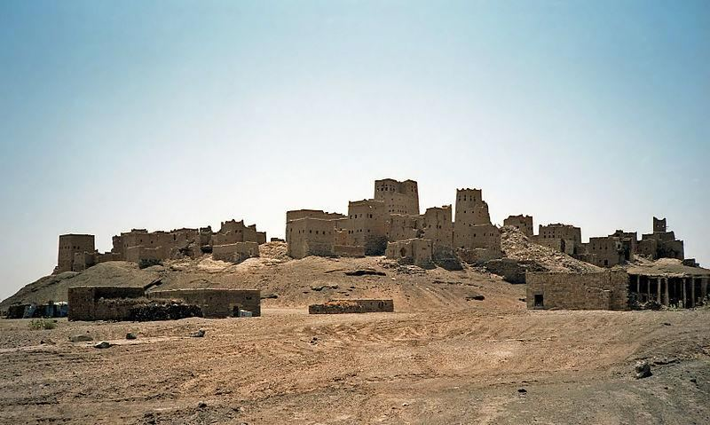

Jewish Tribes Afghan Tribes Reuven – Rabbani Shimon – Shinwari Levi – Liwani Naftali – Daffani Gad – Ghagi Ashor – Ashuri Ephraim – Afridi Children of Yossef – Yusuf Sai
ইহুদি উপজাতি আফগান উপজাতি রিউভেন - রাব্বানী শিমন - শিনওয়ারি লেভি - লিওয়ানি নাফতালি - দাফানি গাদ - ঘাগি আশোর - আশুরি এফ্রাইম - আফ্রিদি ইউসেফের সন্তান - ইউসুফ সাই
They have prevailed over USSR and USA. Therefore, Allah was not wrong in choosing them as the ―People over the Worlds‖.
তারা ইউএসএসআর এবং মার্কিন যুক্তরাষ্ট্রের উপর বিজয়ী হয়েছে। অতএব, আল্লাহ তাদেরকে ‘জগতের মানুষ’ হিসেবে বেছে নেওয়ার ক্ষেত্রে ভুল করেননি।
As to these, surely they say, ―There is nothing beyond our first death, and we shall not be raised again. Then bring our forefathers if what ye say is true!‖ What! Are they better than the people of Tubba and those who were before them? We destroyed them because they were guilty of sin.
এগুলি সম্পর্কে, তারা অবশ্যই বলে, "আমাদের প্রথম মৃত্যু ছাড়া আর কিছুই নেই এবং আমরা পুনরুত্থিত হব না। তাহলে আমাদের বাপ-দাদাদের নিয়ে এসো যদি তোমরা যা বল তা সত্য!'' কী! তারা কি তুব্বার সম্প্রদায় এবং তাদের পূর্ববর্তীদের চেয়ে উত্তম? আমরা তাদের ধ্বংস করেছি কারণ তারা পাপের অপরাধে দোষী ছিল।
Tubba was the title of the kings of Sheba, just as Pharaoh was the title of the Egyptian kings. Modern archaeological studies and ancient writings suggest that Sheba (Saba) was a kingdom in southern Arabia, with its power extending as far as Aqaba and northern Ethiopia. The ruling dynasty of Sheba considered themselves the descendants of El-Maqah, the sun god. A statue of El-Maqah has also been discovered in an ancient temple in northern Ethiopia. The dynasty existed from 1200 BCE to 275 CE, with their capital at Marib. Bilqis was a Queen of Sheba, a Tubba.
তুব্বা ছিল শিবার রাজাদের উপাধি, ঠিক যেমন ফেরাউন ছিল মিশরীয় রাজাদের উপাধি। আধুনিক প্রত্নতাত্ত্বিক অধ্যয়ন এবং প্রাচীন লেখা থেকে জানা যায় যে শেবা (সাবা) দক্ষিণ আরবের একটি রাজ্য ছিল, যার ক্ষমতা আকাবা এবং উত্তর ইথিওপিয়া পর্যন্ত বিস্তৃত ছিল। শেবার শাসক রাজবংশ নিজেদেরকে সূর্য দেবতা এল-মাকার বংশধর বলে মনে করত। উত্তর ইথিওপিয়ার একটি প্রাচীন মন্দিরে এল-মাকার একটি মূর্তিও আবিষ্কৃত হয়েছে। 1200 BCE থেকে 275 CE পর্যন্ত রাজবংশের অস্তিত্ব ছিল, তাদের রাজধানী ছিল মারিবে। বিলকিস ছিলেন শিবার রাণী, তুব্বা।
FIGURE 44.2: Ruins of Marib, Yemen Section 6 of Chapter 44 [Verse 38-50]: Satisfying the Universe (Samawaat)

চিত্র 44_2 / Figure 44_2
চিত্র 44.2: মারিবের ধ্বংসাবশেষ, ইয়েমেন অধ্যায়ের 44 অধ্যায় 6 [আয়াত 38-50]: মহাবিশ্বকে সন্তুষ্ট করা (সামাওয়াত)
চিত্র 44_2 / Figure 44_2
We created not the Skies and Lands and all between them merely in sport. We created them not except for just ends. But most of them do not understand. Verily, the Day of sorting out is the time appointed for all of them. The Day when no protector can avail his client in aught and no help can they receive, except such as receive God's mercy; for He is Exalted in Might, Most Merciful.
আমরা আকাশ ও ভূমি এবং তাদের মধ্যবর্তী সবকিছুকে খেলাধুলায় সৃষ্টি করিনি। আমি তাদের সৃষ্টি করিনি কেবলমাত্র প্রান্ত ছাড়া। কিন্তু তাদের অধিকাংশই বোঝে না। নিঃসন্দেহে সাজানোর দিন তাদের সবার জন্য নির্ধারিত সময়। যেদিন কোন অভিভাবক তার মক্কেলের কোন উপকার করতে পারবে না এবং তারা কোন সাহায্য পাবে না, আল্লাহর রহমত ব্যতীত; কারণ তিনি পরাক্রমশালী, পরম করুণাময়।
The above verses present two points: 1) 'The Skies and the Lands (Universe) are created for a just end,' and 2) 'The Day of Sorting Out is the appointed time for them.' How do these two points relate? Similar verse is there in another chapter as well:
উপরের আয়াত দুটি পয়েন্ট উপস্থাপন করে: 1) 'আকাশ ও ভূমি (মহাবিশ্ব) একটি সঠিক পরিণতির জন্য তৈরি করা হয়েছে' এবং 2) 'বাছাইয়ের দিনটি তাদের জন্য নির্ধারিত সময়।' এই দুটি পয়েন্ট কিভাবে সম্পর্কিত? অনুরূপ আয়াতটি অন্য একটি অধ্যায়েও রয়েছে:
―Allah created the Skies and Lands (Universe) for just ends, and in order that each soul may find the recompense of what it has earned, and none of them be wronged.‖ [Al Quran 54: 22]
"আল্লাহ আকাশ ও ভূমি (মহাবিশ্ব) সৃষ্টি করেছেন ঠিক শেষের জন্য, এবং যাতে প্রত্যেক ব্যক্তি তার উপার্জনের প্রতিফল পায় এবং তাদের কারও প্রতি অন্যায় করা না হয়।" [আল কুরআন 54:22]
Allah has created this vast universe with billions of galaxies. Is it to recompense every soul? There are over 170 billion large galaxies in the visible universe. Many humans will be left in these galaxies as forgotten vicegerents of God. The galaxies are full of fire and hazards, but the universe is more important than humans: ―Assuredly the creation of the Skies and Lands (this universe) is a greater than the creation of men. Yet most men understand not‖ [Al Quran 40:57]
আল্লাহ কোটি কোটি গ্যালাক্সি দিয়ে এই বিশাল মহাবিশ্ব সৃষ্টি করেছেন। এটা কি প্রত্যেক প্রাণের প্রতিদান? দৃশ্যমান মহাবিশ্বে 170 বিলিয়নেরও বেশি বড় গ্যালাক্সি রয়েছে। অনেক মানুষ এই ছায়াপথগুলিতে ঈশ্বরের বিস্মৃত ভাইসার্জেন্ট হিসাবে অবশিষ্ট থাকবে। গ্যালাক্সিগুলি আগুন এবং বিপদে পূর্ণ, তবে মহাবিশ্ব মানুষের চেয়ে বেশি গুরুত্বপূর্ণ: "নিশ্চয়ই আকাশ এবং জমির (এই মহাবিশ্ব) সৃষ্টি মানুষের সৃষ্টির চেয়েও বড়। তবুও অধিকাংশ মানুষ বোঝে না” [আল কুরআন 40:57]
―Behold in the creation of the Skies and Lands, and the alternation of night and day. There are indeed signs for men of understanding. Men who celebrate the praises of Allah standing, sitting and lying on their sides and contemplate the creation in the Skies and Lands, ―Our Lord, not for naught hast Thou created this! Glory to Thee! Give us salvation from the penalty of the fire. Our Lord any whom thou dost admit to the fire, truly Thou cover with shame, and never will wrong doers find any helpers‖!‖ [Al Quran 3:190-792]
- আকাশ ও ভূমির সৃষ্টি এবং রাত ও দিনের পরিবর্তন দেখো। বুদ্ধিমানদের জন্য নিদর্শন রয়েছে। যারা দাঁড়িয়ে, বসে এবং শুয়ে আল্লাহর প্রশংসা উদযাপন করে এবং আকাশ ও ভূমিতে সৃষ্টির কথা চিন্তা করে, - হে আমাদের পালনকর্তা, আপনি এটি কোন কারণে সৃষ্টি করেননি! তোমার মহিমা! আগুনের শাস্তি থেকে আমাদের মুক্তি দাও। আমাদের প্রভু যাকে আপনি আগুনে প্রবেশ করাবেন, আপনি সত্যিই লজ্জায় আবৃত করবেন এবং অন্যায়কারীরা কখনই কোন সাহায্যকারী পাবে না!'' [আল কুরআন 3:190-792]
Verily, the tree of Zaqqum will be the food of the Sinful. Like molten brass, it will boil in their insides. Like the boiling of scalding water seize ye him and drag him into the midst of the blazing fire! Then pour over his head the penalty of boiling water. Taste thou! Truly were thou mighty, full of honor! Truly, this is what ye used to doubt!"
নিশ্চয়ই যাক্কুম গাছ হবে পাপীদের খাদ্য। গলিত পিতলের মতো, এটি তাদের ভিতরে ফুটবে। উত্তপ্ত পানির ফুটন্ত মতন তোমরা তাকে পাকড়াও কর এবং জ্বলন্ত আগুনের মাঝে টেনে নিয়ে যাও! তারপর তার মাথায় ফুটন্ত পানির শাস্তি ঢেলে দিন। আপনি স্বাদ! সত্যিই তুমি ছিলে পরাক্রমশালী, সম্মানে পূর্ণ! সত্যই, এটিই যা তোমরা সন্দেহ করতে!”
A human will live on a planet in their galaxy, where a type of tree called 'Zaqqum' will provide their food. Allah is the Creator through both direct and evolutionary processes. Therefore, one may hope for various species of Zaqqum evolved over the eons of time from lower to higher forms. There will be bodies of water on the planet where the hell-dweller will reside. The water will boil due to the proximity of Mawbiqan (the crucible / accretion disc). The boiling water will erupt and surge through the land, inundating the person's habitat. This will be natural, as the command of Allah has already been given. Matter is devotedly obedient to Allah: "Like the boiling of scalding water seize ye him and drag him into the midst of the blazing fire! Then pour over his head the penalty of boiling water."
একজন মানুষ তাদের ছায়াপথের একটি গ্রহে বাস করবে, যেখানে 'জাককুম' নামক এক ধরনের গাছ তাদের খাদ্য সরবরাহ করবে। আল্লাহ প্রত্যক্ষ ও বিবর্তনীয় উভয় প্রক্রিয়ার মাধ্যমেই স্রষ্টা। অতএব, কেউ আশা করতে পারে যে যাক্কুমের বিভিন্ন প্রজাতি যুগ যুগ ধরে নিম্ন থেকে উচ্চতর আকারে বিবর্তিত হয়েছে। গ্রহে জলের দেহ থাকবে যেখানে নরকবাসী বাস করবে। মাউবিকান (ক্রুসিবল/অ্যাক্রিশন ডিস্ক) এর কাছাকাছি থাকার কারণে পানি ফুটবে। ফুটন্ত পানি ফুটে উঠবে এবং ভূমির মধ্য দিয়ে প্রবাহিত হবে, ব্যক্তির বাসস্থান প্লাবিত করবে। এটা স্বাভাবিক হবে, যেহেতু আল্লাহর নির্দেশ আগেই দেয়া হয়েছে। বস্তুটি আল্লাহর প্রতি একনিষ্ঠভাবে আনুগত্য করে: "যেমন উত্তপ্ত পানির ফুটন্ত, তোমরা তাকে পাকড়াও কর এবং তাকে জ্বলন্ত আগুনের মাঝে টেনে নিয়ে যাও! তারপর তার মাথার উপর ফুটন্ত পানির শাস্তি ঢেলে দাও।"
As to the Guards, in a position of Security amid Jannaat and springs, dressed in fine silk and in rich brocade; they will face each other. Moreover, We shall join them to Companions with beautiful, big and lustrous eyes. There can they call for every kind of fruit in peace and security. Nor will they there taste death, except the first death. And He will protect them from the penalty of the blazing fire as a bounty from thy Lord! That will be the supreme achievement!
রক্ষীদের হিসাবে, জান্নাত এবং ঝর্ণার মধ্যে নিরাপত্তার অবস্থানে, সূক্ষ্ম সিল্ক এবং সমৃদ্ধ ব্রোকেড পরিহিত; তারা একে অপরের মুখোমুখি হবে। তদুপরি, আমরা সুন্দর, বড় এবং দীপ্তিময় চোখ দিয়ে তাদের সাহাবীদের সাথে যোগ দেব। সেখানে তারা শান্তি ও নিরাপত্তায় হরেক রকম ফল আহবান করতে পারে। প্রথম মৃত্যু ছাড়া তারা সেখানে মৃত্যুর স্বাদ গ্রহণ করবে না। এবং তিনি তাদের আপনার পালনকর্তার অনুগ্রহ হিসাবে জ্বলন্ত আগুনের শাস্তি থেকে রক্ষা করবেন! এটাই হবে সর্বোচ্চ অর্জন!
Verily, We have made this easy in thy tongue in order that they may give heed. So, wait thou and watch; for they are waiting.
নিশ্চয়ই আমি এটাকে আপনার ভাষায় সহজ করে দিয়েছি যাতে তারা উপদেশ গ্রহণ করে। সুতরাং, আপনি অপেক্ষা করুন এবং দেখুন; কারণ তারা অপেক্ষা করছে।